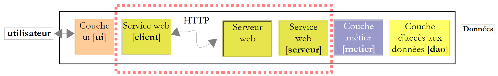
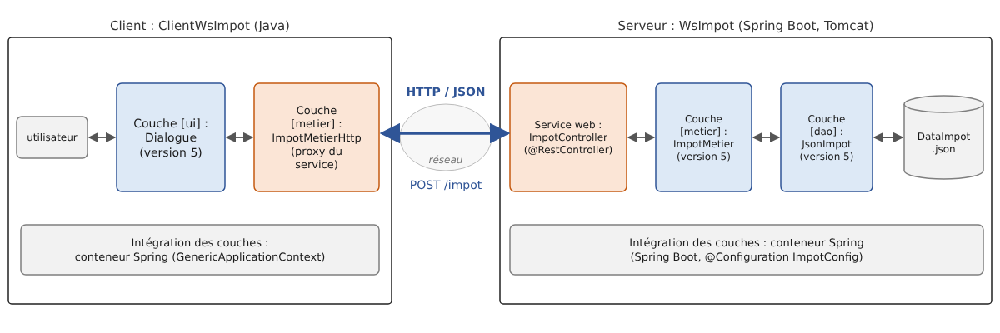

13. Services web
Prérequis : la version 9 de l'application [Impots], présentée à la fin de ce chapitre, réutilise les modules [impots-dao], [impots-metier] et [impots-ui] de la version 5 (chapitre 6). Avant de construire ou d'ouvrir ses projets, il faut avoir installé la version 5 dans le dépôt Maven local par la commande [mvn install] tapée dans le dossier [06-architectures/ImpotsV5] (cf. chapitre 6, section sur [mvn install]).
13.1. Introduction
Nous avons présenté au chapitre précédent plusieurs applications client-serveur TCP/IP. Dans la mesure où les clients et le serveur échangent des lignes de texte, ils peuvent être écrits dans n'importe quel langage. Le client doit simplement connaître le protocole de dialogue attendu par le serveur.
Les services web sont, eux aussi, des applications serveur TCP/IP. Ils présentent les caractéristiques suivantes :
- ils sont hébergés par des serveurs web et le protocole d'échange client-serveur est HTTP (HyperText Transfer Protocol), un protocole au-dessus de TCP/IP, que nous avons découvert au chapitre précédent ;
- le service web a un protocole de dialogue standard, quel que soit le service assuré. Un service web offre divers services S1, S2…, Sn. Chacun d'eux attend des paramètres fournis par le client et rend à celui-ci un résultat. Pour chaque service, le client a besoin de savoir :
- comment désigner le service Si ;
- la liste des paramètres qu'il faut lui fournir et leur type ;
- le type du résultat retourné par le service. Une fois ces éléments connus, le dialogue client-serveur suit le même format, quel que soit le service web interrogé. L'écriture des clients est ainsi normalisée ;
- pour se protéger des attaques venant de l'Internet, beaucoup d'organisations n'ouvrent sur l'extérieur que certains ports de leurs serveurs : essentiellement les ports 80 (HTTP) et 443 (HTTPS) du service web. Tous les autres ports sont verrouillés. Aussi les applications client-serveur telles que celles du chapitre précédent sont-elles en général réservées au réseau privé de l'organisation (intranet). Loger un service au sein d'un serveur web le rend accessible à toute la communauté Internet ;
- le service web peut être vu comme un objet distant : les services offerts deviennent alors des méthodes de cet objet. Un client peut utiliser cet objet distant comme s'il était local, au travers d'un objet intermédiaire appelé proxy (mandataire), qui cache toute la partie communication réseau. On construit ainsi un client indépendant de cette couche : si celle-ci vient à changer, le reste du client n'a pas à être modifié ;
- comme pour les applications client-serveur TCP/IP du chapitre précédent, le client et le serveur peuvent être écrits dans des langages quelconques. Ils échangent des lignes de texte qui comportent deux parties : les entêtes nécessaires au protocole HTTP et le corps du message, dont le format est convenu entre le client et le serveur.
L'architecture d'une application client-serveur à base de service web est la suivante :

C'est une extension de l'architecture en couches du chapitre 6, à laquelle on ajoute des couches de communication réseau spécialisées : le client du service web côté client, le service web lui-même côté serveur. Nous avons déjà rencontré une architecture semblable avec le serveur TCP de calcul de l'impôt (version 8) du chapitre précédent.
13.1.1. Hier : SOAP et WSDL
Dans les années 2000, les services web suivaient le plus souvent la norme SOAP (Simple Object Access Protocol). Le client envoyait une requête HTTP POST dont le corps était un document XML : une « enveloppe » contenant le nom de la méthode appelée et ses paramètres. Le serveur répondait par une autre enveloppe XML contenant le résultat. Chaque service était décrit par un document XML au format WSDL (Web Services Description Language), disponible à l'URL du service suivie de [?wsdl] : il listait les méthodes, leurs paramètres et leurs types. À partir de ce document, des outils généraient automatiquement le proxy du service.
En Java, ces services s'écrivaient avec l'API JAX-WS : une classe annotée [@WebService], dont les méthodes publiques (éventuellement annotées [@WebMethod]) devenaient les méthodes du service ; l'outil [wsimport] générait le proxy client à partir du WSDL. JAX-WS faisait partie du JDK de Java 6 à Java 10 ; il en a été retiré par Java 11 (JEP 320) et vit désormais en dehors du JDK, sous le nom de Jakarta XML Web Services. On le rencontre encore dans des applications anciennes, mais les nouveaux services ne l'utilisent plus guère. Les raisons de cet abandon sont la lourdeur du XML et des enveloppes SOAP, la complexité des normes associées (WS-Security, WS-Addressing…) et la difficulté d'appeler ces services depuis un navigateur.
13.1.2. Aujourd'hui : REST et JSON
Les services web actuels suivent pour la plupart le style REST (REpresentational State Transfer) et échangent des documents JSON (JavaScript Object Notation, présenté au chapitre 5). Le style REST repose sur les principes suivants :
- le service expose des ressources, chacune désignée par une URL : [/impot], [/clients/12], [/clients/12/commandes] ;
- on agit sur ces ressources avec les méthodes (on dit aussi verbes) du protocole HTTP, chacune ayant une signification précise ;
- le résultat de l'action est indiqué par le code de statut HTTP de la réponse ;
- le corps des requêtes et des réponses est le plus souvent un document JSON, plus compact et plus simple que XML ;
- le service est sans état : chaque requête contient toutes les informations nécessaires à son traitement ; le serveur ne mémorise rien d'une requête à l'autre pour un client donné.
Les méthodes HTTP les plus utilisées sont les suivantes :
Méthode | Usage | Exemple |
GET | lire une ressource ; les paramètres éventuels sont dans l'URL | GET /clients/12 |
POST | créer une ressource, ou demander un traitement ; les données sont dans le corps de la requête | POST /clients |
PUT | remplacer une ressource | PUT /clients/12 |
PATCH | modifier une partie d'une ressource | PATCH /clients/12 |
DELETE | supprimer une ressource | DELETE /clients/12 |
Les codes de statut, déjà rencontrés au chapitre précédent, prennent ici tout leur sens :
Code | Signification |
200 OK | la requête a réussi ; le corps de la réponse contient le résultat |
201 Created | la ressource a été créée ; l'entête [Location] donne son URL |
204 No Content | la requête a réussi ; la réponse n'a pas de corps |
400 Bad Request | la requête est incorrecte (paramètre absent ou invalide…) |
404 Not Found | la ressource demandée n'existe pas |
415 Unsupported Media Type | le type du document envoyé (entête [Content-Type]) n'est pas accepté |
500 Internal Server Error | une erreur imprévue s'est produite sur le serveur |
Un service REST n'a pas d'équivalent obligatoire du WSDL. Il est cependant d'usage de le décrire par un document OpenAPI (anciennement Swagger), au format JSON ou YAML, à partir duquel des outils peuvent générer de la documentation, des pages de test et des clients. Nous y reviendrons.
Signalons enfin gRPC, conçu par Google : les méthodes du service et leurs messages sont décrits dans un fichier [.proto], à partir duquel des outils génèrent le serveur et le client, comme au temps du WSDL ; les messages sont codés dans un format binaire compact (Protocol Buffers) et transportés par HTTP/2. gRPC est très efficace et apprécié pour les échanges entre services d'une même organisation, mais il est mal adapté aux navigateurs. Il est disponible en Java avec la bibliothèque [grpc-java], que nous n'utiliserons pas.
13.1.3. Spring Boot et Spring MVC
Pour écrire nos services web, nous utiliserons Spring Boot. Nous avons utilisé au chapitre 6 le conteneur d'injection de dépendances du Spring Framework. Ce framework comprend aussi un module web, Spring MVC, qui associe une URL et une méthode HTTP à une méthode Java grâce à des annotations : [@RestController] sur la classe, [@GetMapping], [@PostMapping]… sur ses méthodes. Spring Boot (version 1.0 en 2014, version 4 en novembre 2025, avec Spring Framework 7) simplifie la mise en œuvre de Spring :
- il configure automatiquement l'application d'après les bibliothèques présentes : si Spring MVC et Jackson sont là, il met en place tout ce qu'il faut pour un service web JSON, sans aucune ligne de configuration ;
- il embarque le serveur web dans l'application : le serveur Tomcat (version 11) est une simple bibliothèque, démarrée par le programme principal. Il n'est donc pas nécessaire d'installer un serveur web ou un serveur d'applications séparé (Tomcat, GlassFish, WildFly…), dans lequel on déployait autrefois l'application sous la forme d'une archive [.war] ;
- il fournit des starters, des dépendances Maven qui regroupent tout ce qu'il faut pour un usage donné. Le starter [spring-boot-starter-webmvc] apporte Spring MVC, Tomcat, Jackson 3 (chapitre 5) et la journalisation (SLF4J et Logback) ;
- il fournit un projet parent Maven, [spring-boot-starter-parent], qui fixe les versions de toutes ces bibliothèques, compatibles entre elles, et un plugin Maven, [spring-boot-maven-plugin], qui lance l'application ([mvn spring-boot:run]) et la livre sous la forme d'un unique fichier [.jar] exécutable.
Spring Boot n'est pas la seule solution : Jakarta EE (l'ancien Java EE) définit l'API standard JAX-RS (Jakarta RESTful Web Services), et des frameworks comme Quarkus, Micronaut ou Helidon sont également très utilisés. Spring Boot est cependant le plus répandu, et il prolonge naturellement ce que nous avons vu au chapitre 6.
13.2. Un premier service web
Nous allons construire une première application client-serveur ayant l'architecture simplifiée suivante :

Les projets de ce chapitre sont des projets Maven, regroupés dans le dossier [13-services-web] :
Les projets sont déjà prêts dans les codes du cours : le lecteur n'a qu'à ouvrir le dossier [13-services-web] dans son IDE (IntelliJ IDEA ou VS Code), ou à se placer dans le dossier d'un projet et à taper la commande Maven indiquée. Les services se lancent par [mvn spring-boot:run], les clients console par [mvn compile exec:java]. Le fichier [pom.xml] placé à la racine du dossier n'est pas un projet parent : il se contente d'énumérer les six projets dans une balise [<modules>], ce qui permet de les construire tous d'un coup ([mvn compile] tapé dans le dossier [13-services-web]).
Pour créer soi-même un projet Spring Boot, le plus simple est d'utiliser le site Spring Initializr : on y choisit Maven, Java, la version de Spring Boot, le nom du projet et ses dépendances (ici « Spring Web »), et on télécharge un zip contenant un projet prêt à l'emploi : le fichier [pom.xml], la classe principale et le fichier [application.properties]. IntelliJ IDEA et VS Code (extension « Spring Boot Extension Pack ») proposent le même assistant.
13.2.1. La partie serveur

Le fichier [pom.xml] du projet [WsHello] est le suivant :
Commentaires :
- lignes 9-14 : le projet hérite du projet parent de Spring Boot, [spring-boot-starter-parent], téléchargé comme une dépendance depuis Maven Central (la balise vide [<relativePath/>] indique qu'il ne faut pas le chercher dans le dossier parent). Ce projet parent fixe les versions de plusieurs centaines de bibliothèques et configure les plugins Maven. C'est pourquoi les dépendances et le plugin des lignes 28-31 et 48-51 n'ont pas de balise [<version>] : leur version est celle choisie par Spring Boot 4.1.1 ;
- ligne 21 : la propriété [java.version] est celle qu'utilise le projet parent pour configurer le compilateur ; la ligne 22 la double, conformément aux autres projets du cours ;
- lignes 28-31 : l'unique dépendance du projet, le starter web. Il apporte Spring MVC (Spring Framework 7.0), le serveur Tomcat 11 embarqué, Jackson 3 et la journalisation ;
- ligne 41 : l'option [-parameters] du compilateur, qui conserve dans les fichiers [.class] les noms des paramètres des méthodes. Spring en a besoin pour associer un paramètre de méthode ([nom]) au paramètre de même nom d'une URL. Le projet parent active déjà cette option ; nous l'écrivons pour qu'elle soit visible ;
- lignes 48-51 : le plugin de Spring Boot. [mvn spring-boot:run] compile et lance l'application ; [mvn package] en fait un fichier [target/ws-hello-1.0.jar] qui contient l'application et toutes ses dépendances, et qu'on lance par [java -jar target/ws-hello-1.0.jar].
La classe principale est la suivante :
- ligne 7 : l'annotation [@SpringBootApplication] réunit trois annotations : [@Configuration] (la classe peut définir des beans, comme au chapitre 6), [@EnableAutoConfiguration] (la configuration automatique d'après les bibliothèques présentes) et [@ComponentScan] (Spring recherche les classes annotées, contrôleurs, configurations…, dans le paquetage de cette classe et ses sous-paquetages) ;
- ligne 10 : nous gardons ici la forme classique de la méthode [main], [public static], sous laquelle les outils de Spring Boot recherchent la classe principale ;
- ligne 12 : [SpringApplication.run] lit la configuration (fichier [application.properties], variables d'environnement, arguments de la ligne de commande), crée le conteneur Spring et ses beans, démarre le serveur Tomcat, puis rend la main. Le programme ne s'arrête pas pour autant : les threads de Tomcat attendent les requêtes jusqu'à l'arrêt de l'application (Ctrl-C).
La configuration de l'application est placée dans le fichier [src/main/resources/application.properties] :
- ligne 2 : le nom de l'application ;
- ligne 4 : le serveur écoute sur le port 5100 (8080 par défaut). On pourrait aussi passer cette valeur en argument : [mvn spring-boot:run -Dspring-boot.run.arguments=--server.port=5100], ou par la variable d'environnement [SERVER_PORT] ;
- ligne 6 : au démarrage, Spring Boot affiche par défaut une grande bannière en caractères ASCII ; nous la supprimons ;
- ligne 8 : le format des messages du journal. Le format par défaut est très complet (date, niveau, numéro du processus, nom de l'application, thread, nom complet de la classe, message) mais donne des lignes très longues. Nous le réduisons à l'heure, au niveau du message, au nom du thread, au nom court de la classe émettrice ([%logger{0}]) et au message.
Le service web lui-même est la classe [HelloController]. Il offre une méthode qui rend la chaîne [Bonjour Mme xx], où xx est le nom reçu :
Commentaires :
- ligne 8 : l'annotation [@RestController] fait de la classe un contrôleur : Spring en crée une instance unique (un singleton) au démarrage, et lui confie les requêtes HTTP dont l'URL correspond à l'une de ses méthodes. Le résultat de chaque méthode est envoyé tel quel au client, dans le corps de la réponse ;
- lignes 12-15 : l'annotation [@GetMapping("/")] associe la méthode HTTP GET et l'URL [/] (la racine du site) à la méthode [accueil], qui rend un texte indiquant comment utiliser le service ;
- lignes 20-23 : le modèle d'URL (on dit la route) [/hello/{nom}] contient une variable [{nom}] : elle correspond à n'importe quel segment d'URL placé après [/hello/]. Ainsi l'URL [/hello/Carla%20Bruni] donne à [{nom}] la valeur [Carla Bruni] (le code [%20] est le codage d'un espace dans une URL). L'annotation [@PathVariable] (ligne 21) demande à Spring de passer cette valeur au paramètre de même nom de la méthode : c'est la liaison de paramètres (data binding). La méthode rend une chaîne de caractères : celle-ci est envoyée telle quelle au client, comme document texte (type [text/plain]) ;
- lignes 26-29 : la même chose, mais la méthode rend un objet de type [Salutation]. Spring le sérialise en JSON avec Jackson (chapitre 5) et l'envoie au client comme document de type [application/json]. C'est la forme normale de la réponse d'un service web REST ;
- lignes 32-33 : le type du résultat, un record (chapitre 4), déclaré à l'intérieur du contrôleur. Jackson sait sérialiser les records : chaque composant devient une propriété JSON de même nom.
Le service est lancé par la commande [mvn spring-boot:run], tapée dans le dossier du projet. Il affiche son journal (le cours a abrégé avec [...] les chemins de la ligne 2) :
- ligne 2 : le démarrage de l'application, la version de Java et le dossier d'exécution, qui est le dossier du projet ;
- ligne 3 : Spring permet de définir des profils (développement, test, production…) qui activent des configurations différentes (fichiers [application-dev.properties]…). Aucun profil n'est actif ici ;
- lignes 4-6 : le serveur Tomcat embarqué est créé ; il écoutera sur le port 5100 ;
- ligne 7 : le conteneur Spring est prêt : il a créé ses beans, parmi lesquels notre contrôleur ;
- lignes 8-9 : Tomcat accepte maintenant les connexions ; l'application est prête. Le démarrage a pris une dizaine de secondes sur notre machine de test, plutôt lente ; il dure en général deux ou trois secondes ;
- lignes 10-12 : ces messages sont apparus lors de la première requête : la servlet [DispatcherServlet] de Spring MVC, qui reçoit toutes les requêtes et les répartit entre les méthodes des contrôleurs, n'est initialisée qu'à ce moment. Une servlet est un composant Java qui traite des requêtes HTTP dans un serveur web comme Tomcat (API Jakarta Servlet) ; Spring MVC est construit au-dessus de cette API. Le nom du thread, [http-nio-5100-exec-1], montre que la requête est traitée par l'un des threads du serveur Tomcat ;
- lignes 13-14 : ces messages sont apparus à l'arrêt du serveur par Ctrl-C, après les essais des paragraphes suivants : l'arrêt est « gracieux », Tomcat termine les requêtes en cours avant de s'arrêter.
Chaque message du journal indique son heure, son niveau ([TRACE], [DEBUG], [INFO], [WARN], [ERROR]), le thread qui l'a émis et la classe émettrice. Les messages de niveau [INFO] et au-delà sont affichés par défaut ; la propriété [logging.level.<paquetage>=DEBUG] affiche aussi les messages de niveau inférieur pour un paquetage donné.
13.2.2. Interroger le service avec curl
Pendant que le service s'exécute, interrogeons-le dans une seconde fenêtre de commandes avec l'outil [curl] présenté au chapitre précédent. L'option [-i] affiche les entêtes de la réponse avant son corps, et l'option [-s] (silent) supprime la barre de progression :
- ligne 2 : la requête a réussi. Tomcat n'envoie pas le texte qui suit habituellement le code de statut ([OK]) : il est facultatif depuis HTTP/1.1 (et n'existe plus en HTTP/2), seul le code compte ;
- ligne 3 : le document est un texte (UTF-8) ;
- ligne 4 : la taille du document, en octets ;
- ligne 5 : l'heure de la réponse, toujours exprimée en temps universel (GMT) dans les entêtes HTTP, alors que le journal du serveur utilise l'heure locale ;
- ligne 7 : le résultat de la méthode [hello].
Demandons maintenant la version JSON :
- ligne 3 : le document est maintenant de type [application/json]. Il n'est pas nécessaire de préciser le jeu de caractères : un document JSON échangé sur le réseau est toujours codé en UTF-8 (RFC 8259) ;
- ligne 7 : l'objet [Salutation] sérialisé. Les propriétés JSON portent les noms des composants du record, [nom] et [message]. Les noms Java étant déjà en « camelCase », l'usage en JavaScript et en JSON, il n'y a rien à convertir.
Une URL qui ne correspond à aucune route donne la réponse 404 :
- ligne 4 : le document est envoyé par morceaux (chunks), chacun précédé de sa taille : le serveur n'a pas eu à calculer la taille totale du document avant de commencer à l'envoyer ;
- ligne 7 : le document d'erreur produit par Spring Boot : la date, le code de statut, son texte et le chemin demandé. Par sécurité, il ne contient ni le message de l'exception éventuelle, ni la pile des appels (propriétés [server.error.include-message] et [server.error.include-stacktrace], désactivées par défaut). Nous verrons avec le service suivant comment obtenir un document d'erreur normalisé.
On peut aussi taper l'URL [http://localhost:5100/hello/Carla Bruni] dans la barre d'adresse d'un navigateur, qui affichera le texte reçu : un service web interrogé par GET se teste très simplement.
13.2.3. Un client console

Il est possible d'écrire le client du service avec un simple client TCP, comme au chapitre précédent : il suffit d'envoyer la requête HTTP et de lire la réponse. On utilise cependant la classe [java.net.http.HttpClient] (Java 11), elle aussi présentée au chapitre précédent, qui gère le protocole HTTP pour nous, et Jackson pour les documents JSON. Le projet [ClientWsHello] est un projet Maven ordinaire, dont le fichier [pom.xml] déclare la dépendance Jackson et la classe principale :
Son programme est le suivant :
Commentaires :
- lignes 16-18 : la réponse JSON du service sera désérialisée en un objet [Salutation]. Le client n'a pas accès au type [Salutation] du serveur : il déclare le sien, avec les mêmes noms de composants. Un client ne partage pas le code du serveur, seulement le format des documents échangés ;
- ligne 22 : l'URL du service est passée en argument ou, à défaut, vaut [http://localhost:5100/] : si l'adresse du service change, le client n'a pas à être recompilé ;
- ligne 24 : le convertisseur JSON de Jackson 3 (chapitre 5) ;
- ligne 27 : un unique [HttpClient] pour tout le programme. Il gère un ensemble de connexions réutilisables et doit être partagé, et non recréé à chaque requête. Depuis Java 21, [HttpClient] implémente [AutoCloseable] : l'instruction [try] avec ressource le ferme à la fin du programme ;
- ligne 37 : le nom saisi devient un segment de l'URL : il faut coder les caractères qui n'y sont pas autorisés. [URLEncoder.encode] code le é en [%C3%A9], mais il est fait pour les paramètres de formulaires, où l'espace est codé [+]. Dans le chemin d'une URL, l'espace doit être codé [%20] : on remplace donc les [+] (un vrai [+] saisi est codé [%2B] et n'est pas concerné) ;
- ligne 39 : la méthode [resolve] de la classe [URI] construit une URL à partir de l'URL de base et d'une URL relative. Attention : l'URL de base doit se terminer par [/] pour que [hello/...] lui soit ajouté ;
- lignes 42-43 : la réponse JSON est désérialisée en un objet [Salutation] par la méthode [readValue] de Jackson ;
- lignes 45-47 : l'exception [ConnectException] est lancée lorsque la connexion au service est impossible, par exemple lorsque aucun service n'écoute à l'adresse indiquée. Elle n'a pas de message : nous en construisons un. Ce [catch] doit précéder celui de la ligne 48, car [ConnectException] dérive de [IOException] ;
- lignes 48-50 : les autres erreurs de communication, et les réponses d'erreur du service (voir ligne 62) ;
- lignes 57-65 : une requête GET, dont le corps de la réponse est rendu sous forme de chaîne ;
- ligne 58 : la requête est construite par un constructeur (builder) : l'URL, la méthode HTTP, puis [build] ;
- ligne 59 : la méthode [send] envoie la requête et attend la réponse. Son second paramètre, un [BodyHandler], indique ce qu'il faut faire du corps de la réponse : [ofString] le lit entièrement dans une chaîne, décodée selon le jeu de caractères indiqué par l'entête [Content-Type] (UTF-8 par défaut). [send] lance une [IOException] en cas d'erreur de communication et une [InterruptedException] si le thread est interrompu pendant l'attente ; le programme principal laisse remonter cette dernière (ligne 20) ;
- lignes 61-63 : contrairement à d'autres bibliothèques, [HttpClient] ne considère pas un code de statut d'erreur (4xx, 5xx) comme une exception : la réponse est rendue normalement, et c'est à nous d'examiner son code. Nous lançons ici une [IOException] pour tout code autre que 2xx.
Résultats, le service étant lancé :
La ligne 4 affiche l'objet [Salutation] reçu, au format de la méthode [toString] générée pour les records. L'option [-q] (quiet) de Maven supprime ses propres messages. Si l'on désigne une adresse où aucun service n'écoute, la connexion est refusée :
Et si l'URL du service est incorrecte, le service répond 404 :
Avec un service SOAP, le client utilisait un proxy généré à partir du WSDL du service, et appelait la méthode distante comme une méthode locale. Nous appelons ici directement les URL du service. Nous écrirons un véritable proxy pour le service de calcul de l'impôt.
13.2.4. La description du service : OpenAPI
Le WSDL décrivait un service SOAP de façon normalisée. Son équivalent actuel est le document OpenAPI. Pour Spring Boot, la bibliothèque [springdoc-openapi] (dépendance [org.springdoc:springdoc-openapi-starter-webmvc-ui]) le produit sans aucune ligne de code : elle examine les contrôleurs et leurs annotations au démarrage et publie le document à l'URL [/v3/api-docs], ainsi qu'une page de test interactive, Swagger UI, à l'URL [/swagger-ui.html]. Le document décrit chaque route : son URL, sa méthode HTTP, ses paramètres et leur type, le schéma JSON de ses réponses. Des générateurs comme OpenAPI Generator en tirent un client typé dans divers langages, exactement comme [wsimport] le faisait avec le WSDL. Cette bibliothèque ne fait pas partie de Spring Boot, et nous ne l'utiliserons pas dans ce chapitre.
13.3. Un service web d'opérations arithmétiques
Le service précédent offrait une unique méthode. Nous considérons maintenant un service web qui offre les quatre opérations arithmétiques : ajouter(a, b), soustraire(a, b), multiplier(a, b) et diviser(a, b). Nous allons en profiter pour étudier les deux façons de transmettre des paramètres à un service web et la façon de signaler les erreurs.
13.3.1. La partie serveur
Le service [WsOperations] accepte deux formes de requête :
Requête | Paramètres |
GET /ajouter?a=1.5&b=2 | l'opération dans le chemin de l'URL, les nombres dans sa chaîne de requête |
POST /calcul | un document JSON dans le corps de la requête : [{"operation":"ajouter","a":1.5,"b":2}] |
Dans les deux cas, la réponse est un document JSON : [{"operation":"ajouter","a":1.5,"b":2.0,"resultat":3.5}]. GET convient aux requêtes simples, qui ne modifient rien sur le serveur : l'URL peut être tapée dans un navigateur, mise dans un favori, et sa réponse peut être conservée par un cache. POST convient aux données volumineuses ou structurées. Le fichier [pom.xml] du projet est celui de [WsHello], au nom du projet près ([ws-operations]), et sa classe principale [WsOperationsApplication] est identique à celle de [WsHello]. Son fichier [application.properties] est le suivant :
- ligne 4 : le service écoute sur le port 5110 ;
- ligne 6 : les erreurs détectées par Spring MVC lui-même (URL inconnue, document JSON incorrect, type de document non accepté…) seront signalées par une réponse au format Problem Details. Ce format, normalisé par la RFC 9457, est un document JSON de type [application/problem+json] qui décrit une erreur : son type, un titre, le code de statut, un détail et d'éventuelles informations complémentaires. C'est la façon standard, pour un service REST, de dire ce qui ne va pas.
Le contrôleur est le suivant :
Commentaires :
- lignes 24-28 : la requête GET. Le paramètre [operation] de la méthode est lié à la variable de route [{operation}] ([@PathVariable]). Les paramètres [a] et [b], annotés [@RequestParam], sont liés aux paramètres de même nom de la chaîne de requête ([?a=1.5&b=2]). Ils sont facultatifs ([required = false]) : un paramètre absent vaut [null] ; sans cela, Spring rejetterait par une réponse 400 une requête à laquelle il manquerait l'un d'eux ;
- ligne 26 : [a] et [b] sont déclarés de type [String]. Nous aurions pu les déclarer de type [double] ou [Double] : Spring aurait alors fait lui-même la conversion, et rejeté une valeur incorrecte par une réponse 400 au message générique. En les recevant sous forme de chaînes, nous gardons la maîtrise des messages d'erreur ;
- lignes 32-35 : la requête POST. Le paramètre [demande], annoté [@RequestBody], est construit par Jackson à partir du corps JSON de la requête. Ses composants sont de type [Double] (ligne 93), et non [double] : une propriété absente du document JSON vaut alors [null], ce qui permet de la détecter ;
- lignes 38-49 : la conversion d'une chaîne en nombre, [null] si elle échoue. Dans une URL comme en JSON, les nombres s'écrivent avec un point décimal : [Double.parseDouble], qui ne dépend pas de la langue du système, est donc le bon outil (et non [NumberFormat], qui attendrait une virgule sur un serveur français, chapitre 5). Elle accepte aussi les textes [NaN] et [Infinity], que nous refusons (ligne 45) ;
- ligne 54 : le nom de l'opération, en minuscules. [Locale.ROOT] fait la conversion indépendamment de la langue du système ;
- lignes 55-61 : l'opération demandée est représentée par une interface fonctionnelle (chapitre 7), [DoubleBinaryOperator], dont la méthode [applyAsDouble(double, double)] rend un [double]. Une expression [switch] choisit la lambda correspondant à l'opération, [null] pour une opération inconnue ;
- lignes 63-73 : on vérifie les trois paramètres en accumulant les erreurs dans un dictionnaire qui associe à chaque paramètre la liste de ses messages d'erreur. Un [LinkedHashMap] conserve l'ordre d'insertion ;
- lignes 74-80 : si une erreur a été trouvée, on rend une réponse 400. La classe [ProblemDetail] de Spring représente un document « Problem Details » : [forStatus] le crée avec un code de statut, [setTitle] fixe son titre et [setProperty] lui ajoute une propriété quelconque, ici [errors], la liste des erreurs. La classe [ResponseEntity] représente une réponse HTTP complète : code de statut, entêtes et corps. [ResponseEntity.badRequest()] prépare une réponse 400 et [body] lui donne son corps ;
- lignes 82-87 : la division par zéro est refusée par une réponse 400, dont le document comporte cette fois un détail ([forStatusAndDetail]). Ce refus est nécessaire : en Java, la division d'un [double] par zéro ne lance pas d'exception mais donne l'infini ([Double.POSITIVE_INFINITY]), qu'un document JSON ne sait pas représenter (Jackson l'écrirait sous forme de chaîne, ["Infinity"]). Le test [b == 0] compare la valeur de l'objet [Double] à zéro : Java le « déballe » (unboxing) automatiquement ;
- ligne 89 : la réponse 200, dont le corps est l'objet [ResultatCalcul] sérialisé en JSON ;
- lignes 93-98 : les deux types échangés avec les clients. Ces objets, qui ne servent qu'à transporter des données entre deux applications, sont appelés DTO (Data Transfer Object). Les records sont parfaits pour cet usage.
Les deux méthodes du contrôleur rendent le type [ResponseEntity<?>] : une réponse dont le corps peut être de n'importe quel type, ici un [ResultatCalcul] ou un [ProblemDetail]. Spring examine le type réel du corps pour le sérialiser ; il donne au document le type [application/json], ou [application/problem+json] pour un [ProblemDetail].
13.3.2. Essais avec curl
Le service est lancé par [mvn spring-boot:run] dans le dossier [WsOperations]. Une addition :
Le nombre 2 est devenu 2.0 : Jackson écrit toujours un [double] avec sa partie décimale. Pour un client, JavaScript en particulier, c'est le même nombre. Une division par zéro :
- ligne 2 : la requête est refusée ;
- ligne 3 : le corps est un document « Problem Details » ;
- ligne 6 : après une réponse 400, Tomcat ferme la connexion par précaution : une requête incorrecte pourrait avoir laissé des données imprévues dans la connexion. Le client en ouvrira une autre pour sa requête suivante ;
- ligne 8 : le document contient les propriétés [title], [status] et [detail], fixées par notre code, et [instance], ajoutée par Spring : le chemin de la requête qui a produit l'erreur. La propriété [type], une URL qui documente le type d'erreur, est absente : la RFC 9457 lui donne alors la valeur [about:blank], qui signifie que le code de statut suffit à décrire le problème. On remarquera que les propriétés sont classées par ordre alphabétique : c'est le comportement par défaut de Jackson 3 pour les classes ordinaires comme [ProblemDetail] ; les records, eux, gardent l'ordre de leurs composants.
Une opération inconnue, un nombre écrit avec une virgule décimale et un nombre absent :
La propriété [errors] du document contient les erreurs de validation, paramètre par paramètre ; ajoutée par [setProperty], elle est placée après les propriétés normalisées. Une requête POST maintenant. L'option [-d] de [curl] envoie le texte qui la suit dans le corps d'une requête POST, et l'option [-H] ajoute un entête à la requête, ici le type du document envoyé :
Si le document JSON envoyé est incorrect, Jackson ne peut construire le paramètre [demande] : Spring répond lui-même 400, sans exécuter notre méthode :
Le document « Problem Details » de la ligne 8 a été produit par Spring MVC, grâce à la propriété [spring.mvc.problemdetails.enabled] ; sans elle, on obtiendrait le document d'erreur de Spring Boot vu avec [WsHello]. Il en va de même si l'on oublie l'entête [Content-Type] : [curl] envoie alors le corps comme un formulaire HTML, et Spring refuse ce type de document :
Le code 415 (Unsupported Media Type) signifie que le type du document envoyé n'est pas accepté ; l'entête [Accept] de la ligne 3 indique au client les types acceptés.
13.3.3. La partie client
Notre client console demande sur une ligne l'opération et les deux nombres, puis interroge le service deux fois : par GET, puis par POST, afin de montrer les deux façons de faire. Son fichier [pom.xml] est celui de [ClientWsHello], au nom du projet et de la classe principale près. Son programme est le suivant :
1 2 3 4 5 6 7 8 9 10 11 12 13 14 15 16 17 18 19 20 21 22 23 24 25 26 27 28 29 30 31 32 33 34 35 36 37 38 39 40 41 42 43 44 45 46 47 48 49 50 51 52 53 54 55 56 57 58 59 60 61 62 63 64 65 66 67 68 69 70 71 72 73 74 75 76 77 78 79 80 81 82 83 84 85 86 87 88 89 90 91 92 93 94 95 96 97 98 99 100 101 102 103 104 105 106 107 108 109 110 111 112 113 114 115 116 117 118 119 120 121 122 123 124 | |
Commentaires :
- lignes 20-29 : les DTO du client. Ils sont déclarés ici à nouveau : un client ne partage pas le code du serveur, seulement le format des documents JSON échangés. La classe [ProblemDetail] de Spring fait partie du framework web ; un simple record suffit au client. Ses composants sont des types objets ([String], [Integer], [Map]) : une propriété absente du document, comme [detail] ou [errors], vaut [null] ;
- ligne 32 : les nombres sont saisis et affichés au format de la langue du système, ici le français : virgule décimale ;
- ligne 37 : depuis Jackson 3, les propriétés JSON inconnues du record (ici [instance]) sont ignorées par défaut lors de la désérialisation ;
- lignes 51-63 : les nombres sont vérifiés localement, avant tout appel au service. Un service doit toujours vérifier ses paramètres (il ne sait pas qui l'appelle), mais un client peut éviter un échange réseau inutile ;
- ligne 64 : le texte qui décrit le calcul, avec les nombres au format français ;
- ligne 67 : l'URL de la requête GET. Les nombres doivent y être écrits avec un point décimal : la concaténation d'un [Double] à une chaîne utilise sa méthode [toString], qui ne dépend pas de la langue du système. L'opération, saisie par l'utilisateur, est codée par [URLEncoder] ;
- lignes 69-70 : la requête GET ;
- lignes 71-74 : en cas de succès (code 200), la réponse JSON est désérialisée en un objet [ResultatCalcul] ;
- lignes 75-79 : en cas d'échec, on affiche le code de statut et le document reçu, tel quel ;
- lignes 80-83 : l'exception [IOException] signale une erreur de communication, par exemple un service injoignable ;
- lignes 87-92 : la requête POST. L'objet [DemandeCalcul] est sérialisé en JSON par [writeValueAsString] ; la requête reçoit l'entête [Content-Type], puis son corps : [BodyPublishers.ofString] envoie une chaîne, codée en UTF-8 ;
- lignes 97-107 : en cas d'échec, le corps est un document « Problem Details », désérialisé en un objet [Probleme] dont on affiche le titre, le détail et les erreurs de validation. La méthode [forEach] d'un [Map] reçoit une lambda à deux paramètres, la clé et la valeur de chaque élément (chapitre 7) ;
- lignes 118-123 : la lecture d'un nombre au format français. La méthode [parse(String, ParsePosition)] de [NumberFormat] lit le début de la chaîne et indique dans l'objet [ParsePosition] où elle s'est arrêtée : si elle ne s'est pas arrêtée à la fin, la saisie contient des caractères en trop ([2,5x]).
Résultats, le service étant lancé :
- ligne 3 : l'URL de la requête GET : le nombre 1,5 saisi y est écrit 1.5 ;
- lignes 6-8 : la même erreur vue par les deux requêtes : le document brut pour la requête GET, son exploitation pour la requête POST ;
- lignes 10-12 : l'opération inconnue a été détectée par le service ;
- ligne 14 : le nombre incorrect a été détecté par le client, qui n'a pas interrogé le service.
13.4. Application exemple - version 9 : un service web de calcul d'impôt
Nous reprenons l'application de calcul de l'impôt. Au chapitre précédent (version 8), nous en avions fait un serveur TCP que l'on pouvait interroger à distance, avec un protocole de dialogue qui lui était propre. Nous en faisons maintenant un service web REST.
13.4.1. L'architecture
L'architecture de la version 9 est la suivante :

- côté serveur, le service web [WsImpot] reçoit les requêtes HTTP et les fait traiter par les couches [metier] et [dao] de la version 5 (chapitre 6), réutilisées telles quelles ;
- côté client, la couche [ui] de la version 5 est elle aussi réutilisée telle quelle. Elle dialogue avec une couche [metier] d'un nouveau genre, [ImpotMetierHttp], qui implémente l'interface [IImpotMetier] en interrogeant le service web : c'est un proxy du service. La couche [ui] ne sait pas que le calcul se fait sur une autre machine ;
- de part et d'autre, l'intégration des couches est confiée au conteneur d'injection de dépendances de Spring, comme dans la version 5.
13.4.2. Le service web
Le contrat du service est le suivant :
Requête | Réponse en cas de succès | Réponse en cas d'erreur |
GET /impot?marie=o&enfants=2&salaire=60000 | 200 : [{"impot":4282}] | 400 : document « Problem Details » |
POST /impot avec le corps [{"marie":true,"enfants":2,"salaire":60000}] | 200 : [{"impot":4282}] | 400 : document « Problem Details » |
Le projet [WsImpot] dépend des modules [impots-dao] et [impots-metier] de la version 5. Pour que Maven les trouve, il faut d'abord les installer dans le dépôt Maven local de la machine (le dossier [.m2/repository] du dossier personnel de l'utilisateur), en tapant [mvn install] dans le dossier [06-architectures/ImpotsV5] (chapitre 6). Les dépendances du fichier [pom.xml] de [WsImpot] sont alors les suivantes (le reste du fichier est celui de [WsHello], au nom du projet près : [exemples.impots:ws-impot:9.0]) :
- lignes 7-17 : les deux modules de la version 5, désignés par leurs coordonnées Maven. Le module [impots-dao] apporte aussi les classes [TrancheImpot] et [ImpotException] de la couche [entites]. Ces modules dépendent de Jackson 3.1.5, que le starter web apporte déjà.
Le fichier de configuration [application.properties] est le suivant :
- ligne 4 : le service écoute sur le port 5120 ;
- lignes 13-14 : la configuration de la couche [dao], sous la même forme que dans le fichier [impots.properties] de la version 5 : l'implémentation à utiliser et son fichier de données. Ce ne sont pas des propriétés de Spring Boot, mais des propriétés propres à notre application : un fichier [application.properties] peut en contenir autant qu'on le souhaite. Nous utilisons ici le fichier JSON, [DataImpot.json], placé dans le dossier du projet, qui est le dossier d'exécution du service avec [mvn spring-boot:run].
Les couches [dao] et [metier] sont intégrées au conteneur Spring par une classe de configuration :
Commentaires :
- ligne 15 : l'annotation [@Configuration] (chapitre 6) : la classe définit des beans. Elle est trouvée par Spring car elle se trouve dans le paquetage de la classe principale ([@ComponentScan]) ;
- lignes 19-29 : la méthode annotée [@Bean] crée la couche [dao]. Ses paramètres sont fournis par Spring : l'annotation [@Value] y injecte la valeur d'une propriété de la configuration. Dans [${dao.implementation:HardwiredImpot}], ce qui suit le caractère [:] est la valeur par défaut, utilisée si la propriété est absente. Cette méthode et la suivante reprennent celles de la classe [ImpotsConfig] de la version 5 (chapitre 6), sans l'annotation [@PropertySource] : Spring Boot lit lui-même le fichier [application.properties] ;
- lignes 32-35 : la couche [metier]. Le paramètre [dao] de la méthode reçoit le bean de type [IImpotDao] : Spring crée donc la couche [dao] avant la couche [metier].
Ces lignes remplacent l'intégration des couches que faisait, dans la version 5, le programme principal : le conteneur Spring est le même, mais c'est désormais Spring Boot qui le crée et qui trouve lui-même la classe de configuration. Les beans définis ainsi sont des singletons, créés au démarrage de l'application, avant le traitement de la moindre requête : si le fichier de données est absent ou incorrect, le service ne démarre pas, au lieu de répondre par une erreur 500 à toutes les requêtes. Nous le vérifierons plus loin.
Le service web est le contrôleur [ImpotController] :
Commentaires :
- ligne 24 : le journal de la classe. Spring Boot utilise l'API de journalisation SLF4J (Simple Logging Facade for Java), dont l'implémentation est ici Logback. [LoggerFactory.getLogger] rend un journal dont la catégorie est le nom complet de la classe ;
- lignes 27-31 : le contrôleur reçoit la couche [metier] par son constructeur. Spring, qui crée le contrôleur, lui passe le bean de type [IImpotMetier] défini par [ImpotConfig] : c'est l'injection par constructeur du chapitre 6. Un champ [final] garantit que la couche ne changera pas ;
- lignes 34-43 : la requête GET. Les trois paramètres de la chaîne de requête sont reçus sous forme de chaînes et convertis : [o]/[n] pour [marie] (lignes 37-41, une expression [switch] dont le type est [Boolean]), des entiers pour [enfants] et [salaire] ([lireEntier], lignes 76-82), [null] en cas d'erreur ;
- lignes 46-49 : la requête POST : le corps JSON est désérialisé en un objet [DemandeImpot] (ligne 94), dont les composants de type objet ([Boolean], [Integer]) permettent de détecter les valeurs absentes. La même URL [/impot] est associée à deux méthodes, selon la méthode HTTP de la requête ;
- lignes 52-73 : le traitement commun aux deux requêtes. Il rend la réponse en cas de succès, et lance une exception en cas d'erreur. Le type de son résultat, comme celui des méthodes des lignes 35 et 47, est donc simplement [ReponseImpot] : on voit à la lecture de leur signature ce que rend le service quand tout va bien ;
- ligne 54 : les trois paramètres sont-ils corrects ? Les comparaisons [enfants >= 0] et [salaire >= 0] déballent les objets [Integer] : elles ne sont évaluées que si ceux-ci ne sont pas [null], grâce à l'évaluation paresseuse de l'opérateur [&&] ;
- ligne 55 : le calcul est confié à la couche [metier] de la version 5 ;
- ligne 56 : chaque calcul est journalisé, au niveau [INFO]. Le texte du message est un modèle : chaque [{}] y est remplacé par l'argument correspondant, dans l'ordre. Contrairement à une concaténation, le message n'est construit que s'il doit être affiché (selon le niveau du journal), et les outils de journalisation peuvent enregistrer séparément chaque valeur ;
- lignes 60-72 : en cas d'erreur, on construit la liste des erreurs, on journalise un avertissement ([warn]) et on lance une exception [DemandeIncorrecteException] qui transporte cette liste ;
- lignes 85-91 : une méthode annotée [@ExceptionHandler] est un gestionnaire d'exception : Spring l'appelle lorsqu'une méthode du contrôleur lance une exception du type de son paramètre, ici [DemandeIncorrecteException]. Ce qu'elle rend devient la réponse HTTP : un [ProblemDetail], dont le code de statut (400) devient celui de la réponse ;
- lignes 94-99 : les DTO du service.
L'exception [DemandeIncorrecteException] est la suivante :
- ligne 8 : une exception non contrôlée, qui n'a pas à être déclarée par les méthodes qui la lancent ;
- lignes 10-11 : une exception est sérialisable (au sens de la sérialisation binaire de Java) : le compilateur demande, avec l'option [-Xlint:all], qu'elle déclare un numéro de version ;
- ligne 15 : la liste des erreurs. Le mot clé [transient] exclut ce champ de la sérialisation binaire, car le type [Map] n'est pas forcément sérialisable ; sans lui, le compilateur émettrait un avertissement. Cela n'a aucune conséquence ici : nos exceptions ne sont jamais sérialisées.
La classe principale [WsImpotApplication] est identique à celle des deux autres services. Le dossier [src/main/resources/static] contient le client web, étudié au paragraphe suivant.
Le service web est sans état : les méthodes du contrôleur ne conservent rien d'une requête à l'autre. Le contrôleur et les couches [metier] et [dao] sont des singletons, créés une fois pour toutes, qui vivent aussi longtemps que l'application ; ils sont partagés par toutes les requêtes, éventuellement traitées en même temps par des threads différents du serveur Tomcat (chapitre 8). Cela ne pose pas de problème ici car ces objets ne sont jamais modifiés après leur construction : les tranches d'impôt sont lues une fois pour toutes et le contrôleur n'a qu'un champ [final]. Un contrôleur ne doit jamais ranger dans ses champs des données propres à une requête. Le singleton est la portée par défaut des beans Spring ; il en existe d'autres : [prototype] (un objet à chaque demande au conteneur), [request] (un objet par requête HTTP), [session] (un objet par session HTTP). Signalons enfin que la propriété [spring.threads.virtual.enabled=true] fait traiter chaque requête par un thread virtuel (Java 21, chapitre 8) au lieu d'un thread du pool de Tomcat : le service peut alors traiter un très grand nombre de requêtes simultanées qui attendent des entrées-sorties.
13.4.3. Exécution du service
Commençons par une erreur de configuration. Les arguments de la ligne de commande de la forme [--propriété=valeur] font partie de la configuration de l'application et remplacent les valeurs de [application.properties]. Avec [mvn spring-boot:run], on les passe par la propriété [spring-boot.run.arguments]. Désignons un fichier de données inexistant (le cours a abrégé avec [...] les lignes de ce journal, qui sont très longues) :
- ligne 4 : le serveur Tomcat a été créé, mais il n'a pas encore ouvert son port ;
- ligne 6 : la création des beans a échoué. Pour créer le contrôleur, Spring a dû créer la couche [metier], donc la couche [dao], dont le constructeur a lancé une [ImpotException] (chapitre 6). Les messages de nos couches sont en français ; ceux de Spring sont en anglais ;
- ligne 7 : le serveur Tomcat est arrêté : le service n'a accepté aucune requête ;
- lignes 9-21 : le rapport d'échec du démarrage. Sa description (ligne 17) et l'action conseillée (ligne 21) sont produites par une classe que nous avons écrite pour cela.
En effet, lorsque le démarrage échoue, Spring Boot affiche normalement l'exception et toute la pile des appels : plusieurs dizaines de lignes, où le message utile est difficile à trouver. Spring Boot peut aussi confier l'exception à des analyseurs d'échec (failure analyzers), qui la traduisent en un rapport lisible. Il en possède pour les erreurs les plus courantes (port déjà utilisé, bean introuvable…), et nous pouvons ajouter les nôtres :
- ligne 9 : la classe [AbstractFailureAnalyzer<T>] de Spring Boot recherche une exception de type [T], ici [ImpotException], dans la chaîne des causes de l'exception qui a fait échouer le démarrage. Si elle en trouve une, elle appelle la méthode [analyze] ;
- ligne 12 : le paramètre [rootFailure] est l'exception de départ, [cause] l'[ImpotException] trouvée dans la chaîne ;
- lignes 14-18 : le rapport est un objet [FailureAnalysis] composé d'une description, d'une action conseillée et de l'exception analysée.
Cet analyseur n'est pas un bean (il doit fonctionner même si le conteneur n'a pas pu être créé) : Spring Boot le cherche dans les fichiers [META-INF/spring.factories] des bibliothèques et de l'application. Le nôtre est placé dans [src/main/resources/META-INF] :
- ligne 2 : la clé est le nom de l'interface [FailureAnalyzer], la valeur le nom de notre classe (plusieurs classes seraient séparées par des virgules).
Lançons maintenant le service normalement, par [mvn spring-boot:run], puis interrogeons-le avec [curl] :
C'est la valeur de contrôle attendue : un contribuable marié avec deux enfants et un salaire annuel de 60 000 euros paie 4 282 euros d'impôt (rappelons que le barème utilisé, celui de 2004, n'est conservé que pour l'exercice). Avec des paramètres incorrects :
Puis en POST, avec un document JSON :
Le journal du service sera montré à la fin du chapitre : il contient la trace de tous les calculs demandés.
13.4.4. Le client console : une nouvelle couche [metier]
Le client de la version 9 reprend la couche [ui] de la version 5, sans la modifier : la classe [impots.ui.Dialogue], dont la méthode statique [run(IImpotMetier metier)] dialogue avec l'utilisateur et demande les calculs à la couche [metier] qu'on lui passe. Il suffit de lui passer une couche [metier] qui interroge le service web. Les dépendances du projet [ClientWsImpot] sont les suivantes (le reste du fichier [pom.xml] est celui de [ClientWsHello], au nom du projet et de la classe principale près : [exemples.impots:client-ws-impot:9.0], [impots.client.Main]) :
- lignes 4-13 : les modules de la version 5 : [impots-metier] pour l'interface [IImpotMetier], [impots-ui] pour la classe [Dialogue]. Un projet peut dépendre d'un module qui contient un programme principal : il utilise alors ses classes publiques, sans exécuter ce programme. Le module [impots-dao] est une dépendance indirecte (dite transitive) : le client n'utilise de lui que la classe [ImpotException]. De même, [impots-ui] apporte le conteneur Spring ([spring-context]) ;
- lignes 15-19 : Jackson, pour les documents JSON. Il est aussi apporté par [impots-dao], mais le client l'utilise directement : il est préférable de le déclarer.
La nouvelle couche [metier] est la classe [ImpotMetierHttp] :
Commentaires :
- ligne 14 : la classe implémente l'interface [IImpotMetier] de la version 5 ;
- lignes 17-21 : les DTO, déclarés à l'intérieur de la classe ([private]) car personne d'autre ne les utilise ;
- lignes 28-31 : la classe reçoit par son constructeur le client HTTP et l'URL du service, à partir de laquelle elle calcule l'URL de la méthode [POST /impot] ;
- lignes 36-40 : la requête [POST impot], avec la demande sérialisée en JSON dans son corps ;
- ligne 44 : la requête est envoyée de façon synchrone : la méthode [send] attend la réponse, ce qui convient à la méthode [calculerImpot] de l'interface, elle-même synchrone (elle rend un [int]) ;
- lignes 45-47 : [send] lance une [IOException] si le service est injoignable. C'est une exception contrôlée, que la méthode [calculerImpot] de l'interface ne déclare pas : elle est encapsulée dans une [ImpotException], l'exception non contrôlée de l'application [Impots] ;
- lignes 48-52 : de même pour l'[InterruptedException], lancée si le thread est interrompu pendant l'attente. Le fait de l'attraper efface l'indicateur d'interruption du thread : la bonne pratique (chapitre 8) est de le rétablir, par [Thread.currentThread().interrupt()], pour que le code appelant puisse savoir que le thread a été interrompu ;
- lignes 54-57 : une réponse d'erreur est transformée en [ImpotException], dont le code est le code de statut HTTP ;
- ligne 59 : la réponse JSON [{"impot":4282}] est désérialisée et le montant de l'impôt est rendu.
Avec un service SOAP, l'outil [wsimport] générait un proxy, et une classe semblable à celle-ci implémentait [IImpotMetier] en lui déléguant le calcul : aujourd'hui, nous écrivons nous-mêmes les quelques dizaines de lignes du proxy.
La méthode [calculerImpot] de l'interface [IImpotMetier] étant synchrone, nous avons utilisé la méthode synchrone [send] de [HttpClient]. Celui-ci offre aussi une méthode asynchrone, [sendAsync], qui rend immédiatement un [CompletableFuture<HttpResponse<T>>] (chapitre 9). Pour en profiter, il faudrait rendre l'interface asynchrone : [CompletableFuture<Integer> calculerImpotAsync(boolean marie, int nbEnfants, int salaire)], ce qui obligerait à modifier l'interface [IImpotMetier], ses implémentations et la couche [ui]. Nous ne l'avons pas fait, pour garder intactes les couches de la version 5. Avec les threads virtuels (Java 21), le code synchrone redevient d'ailleurs la façon recommandée d'écrire des programmes qui attendent beaucoup d'entrées-sorties : un thread virtuel bloqué par [send] ne bloque pas de thread du système.
Le programme principal du client intègre les couches :
Commentaires :
- ligne 13 : l'URL du service, passée en argument ou par défaut [http://localhost:5120/] ;
- ligne 18 : le conteneur Spring, comme dans la version 5. Il est fermé à la fin du bloc [try] ;
- lignes 20-22 : on enregistre trois beans : l'URL du service et le client HTTP, fournis par des lambdas (des [Supplier]), puis la classe [ImpotMetierHttp]. Pour créer celle-ci, Spring examine son constructeur et lui passe les beans de types [HttpClient] et [URI] ;
- ligne 23 : le conteneur crée les beans ;
- ligne 24 : on demande au conteneur un bean de type [IImpotMetier] : il rend l'objet [ImpotMetierHttp], qui implémente cette interface. Le reste du programme ignore tout de l'implémentation ;
- ligne 28 : le dialogue de la version 5, sans aucune modification ;
- lignes 29-33 : si le service ne peut être joint, l'exception remonte de la couche [metier] à travers la couche [ui], qui ne la gère pas : on l'affiche avec la méthode [Dialogue.afficherErreur] de la version 5 ;
- lignes 35-37 : en cas d'erreur, le programme se termine avec le code 1, après la fermeture du conteneur.
Résultats, le service étant lancé :
On retrouve les valeurs de contrôle du calcul de l'impôt : 4 282, 2 959 et 11 519 euros. La saisie incorrecte de la ligne 8 a été détectée par la couche [ui], qui n'a pas appelé la couche [metier] : le service n'a reçu que des demandes correctes. Si le service est arrêté :
L'[ImpotException] de notre proxy encapsule l'exception [ConnectException] lancée par [send], qui encapsule elle-même les exceptions de la couche réseau (chapitre 12). Aucune n'a de message : [getMessage()] rend [null].
13.5. Un client web pour le service de calcul d'impôt
Une application web « classique » produit ses pages HTML sur le serveur : à chaque clic sur un bouton, le formulaire est envoyé au serveur, qui renvoie au navigateur une nouvelle page complète. Aujourd'hui, le navigateur interroge le plus souvent un service web lui-même, en JavaScript, et ne met à jour que la partie de la page qui change. C'est ce que nous allons faire. L'architecture est la suivante :

- 1 : le navigateur demande la page [/] ; le serveur [WsImpot] lui envoie le fichier statique [index.html] ;
- 2 : à chaque clic sur le bouton [Calculer], le code JavaScript de la page envoie la requête [POST /impot] au service web et affiche l'impôt reçu dans la page, sans la recharger.
Le service web n'a pas été modifié : il sert simplement un fichier de plus. Spring Boot sert en effet automatiquement, comme fichiers statiques, les fichiers placés dans le dossier [static] des ressources de l'application ([src/main/resources/static]) : pages HTML, images, scripts, feuilles de style… Le fichier [static/index.html] est de plus servi pour l'URL [/] : c'est la page d'accueil (welcome page). Un même serveur peut ainsi héberger un site web et un service web. La page [index.html] est la suivante :
1 2 3 4 5 6 7 8 9 10 11 12 13 14 15 16 17 18 19 20 21 22 23 24 25 26 27 28 29 30 31 32 33 34 35 36 37 38 39 40 41 42 43 44 45 46 47 48 49 50 51 52 53 54 55 56 57 58 59 60 61 62 63 64 65 66 67 68 69 70 71 72 73 74 75 76 77 78 79 80 81 82 83 84 85 86 87 88 89 90 91 92 93 94 95 96 97 98 99 100 101 102 103 104 105 106 107 108 109 110 | |
Commentaires :
- lignes 15-44 : le formulaire : deux boutons radio pour l'état marital, deux zones de saisie pour le nombre d'enfants et le salaire, chacune suivie d'une cellule où s'affichera un éventuel message d'erreur, une zone pour l'impôt, un paragraphe pour un message général et deux boutons ;
- lignes 46-108 : le code JavaScript de la page, exécuté par le navigateur. Le cours ne fait pas l'étude de JavaScript ; ce code est cependant assez proche de Java pour être lu sans difficulté ;
- ligne 57 : une saisie qui n'est pas un entier donne [null] ; ce sera au service de signaler l'erreur ;
- ligne 70 : le gestionnaire du clic sur le bouton [Calculer] (envoi du formulaire). C'est une fonction asynchrone ([async]) : comme un [CompletableFuture] (chapitre 9), elle ne bloque pas le navigateur pendant l'attente de la réponse ;
- ligne 71 : on empêche le navigateur d'envoyer lui-même le formulaire, ce qui provoquerait le chargement d'une nouvelle page ;
- lignes 74-77 : la demande, un objet JavaScript qui a la forme attendue par [POST /impot] ;
- lignes 80-83 : la fonction [fetch] du navigateur envoie la requête HTTP : la méthode [POST], l'entête [Content-Type] et le corps, la demande sérialisée en JSON par [JSON.stringify]. L'URL [impot] est relative à celle de la page : la requête part vers le serveur qui a fourni la page. [await] attend la réponse sans bloquer le navigateur ;
- ligne 85 : le corps JSON de la réponse est désérialisé en un objet JavaScript ;
- lignes 86-88 : en cas de succès (code 2xx), on affiche l'impôt ;
- lignes 91-94 : en cas d'erreur, on affiche le titre du document « Problem Details » et les messages d'erreur du nombre d'enfants et du salaire, chacun à côté de sa zone de saisie. L'opérateur [?.] rend [undefined] si l'objet à sa gauche n'existe pas, au lieu de provoquer une erreur ; l'opérateur [??] remplace une valeur absente par celle qui le suit. Java n'a pas d'équivalent direct de ces opérateurs : on y utilise des tests de [null] ou un [Optional] ;
- lignes 103-106 : le bouton [Effacer] remet le formulaire à zéro, localement, sans interroger le service.
Le service étant lancé, demandons l'URL [http://localhost:5120/] avec un navigateur :

Après saisie d'un calcul et clic sur le bouton [Calculer] :

Avec des saisies incorrectes, les messages d'erreur sont ceux du service web :

Ces copies d'écran ont été prises avec le navigateur Chromium, piloté par un programme grâce à la bibliothèque Playwright : c'est ainsi qu'on automatise les tests d'une interface web.
Ici, la page et le service ont la même origine (même protocole, même machine, même port : [http://localhost:5120]). Si la page était servie par un autre site, par exemple [http://localhost:5000], le navigateur appliquerait la politique de même origine : il ne laisserait le code JavaScript lire la réponse du service que si celui-ci l'y autorise par l'entête [Access-Control-Allow-Origin]. Pour une requête comme la nôtre (POST avec un corps JSON), le navigateur demanderait même cette autorisation avant d'envoyer la requête, par une requête préalable de méthode OPTIONS (preflight). C'est le mécanisme CORS (Cross-Origin Resource Sharing), qui protège l'utilisateur contre les pages malveillantes qui voudraient utiliser à son insu des services où il est connecté. Pour accepter d'autres origines, un contrôleur Spring peut être annoté [@CrossOrigin(origins = "http://localhost:5000")] ; une configuration globale est aussi possible (méthode [addCorsMappings] de l'interface [WebMvcConfigurer]). Les clients qui ne sont pas des navigateurs ([curl], nos clients console) ne sont pas concernés par CORS.
Pour des interfaces web plus riches produites par le serveur, Spring MVC propose aussi des contrôleurs qui rendent des pages HTML construites à partir de modèles (Thymeleaf, par exemple), qui ne relèvent pas de ce cours.
13.6. Un service web est indépendant du langage de son client
Avec un service SOAP, le client devait disposer d'un outil capable de lire le WSDL et de générer le proxy, et les différences d'interprétation des normes entre plateformes posaient souvent des problèmes d'interopérabilité. Avec un service REST/JSON, n'importe quel langage disposant d'un client HTTP et d'une bibliothèque JSON, c'est-à-dire tous les langages actuels, peut interroger le service sans outil particulier. Nous l'avons déjà vu avec [curl], qui n'est pas écrit en Java, et avec le JavaScript du navigateur. Voici un client écrit pour Node.js, l'environnement d'exécution de JavaScript hors du navigateur :
- ligne 3 : l'URL du service, passée en argument ou par défaut ;
- lignes 6-9 : trois demandes de calcul, la dernière étant incorrecte ;
- lignes 14-17 : la même fonction [fetch] que dans le navigateur ;
- lignes 20-23 : l'affichage de l'impôt ou des erreurs.
Le service étant lancé :
En Python, on utiliserait de même le module [requests] ou [httpx], en C# la classe [HttpClient]. Voici enfin le journal du service [WsImpot] pendant l'ensemble des essais de ce chapitre ([curl], client console, navigateur, client Node.js), jusqu'à son arrêt par Ctrl-C (le cours a abrégé avec [...] les chemins de la ligne 2) :
- ligne 8 : Spring Boot a trouvé la page d'accueil [static/index.html] ;
- lignes 14-24 : les messages de notre contrôleur : les lignes [INFO] journalisent les calculs, les lignes [WARN] les demandes incorrectes, avec les noms des paramètres en cause. Les lignes 14-16 viennent de [curl], les lignes 17-19 du client console, les lignes 20-21 du navigateur et les lignes 22-24 du client Node.js ;
- les noms des threads ([http-nio-5120-exec-1] à [exec-10]) montrent que les requêtes sont réparties entre les threads du pool de Tomcat ; les requêtes successives d'un même client ne sont pas forcément traitées par le même thread.
13.7. Compléments
13.7.1. Le type des réponses et la gestion des erreurs
Le service [WsOperations] rend des objets [ResponseEntity<?>] : on ne sait pas, à la lecture de la signature de ses méthodes, quelles réponses elles peuvent produire, et le compilateur ne vérifie rien. Le service [WsImpot] rend le type précis de sa réponse en cas de succès, [ReponseImpot], et signale les erreurs par des exceptions, transformées en réponses par un gestionnaire [@ExceptionHandler]. C'est la forme la plus courante avec Spring : le code des méthodes ne traite que le cas normal, et les outils (le générateur de documents OpenAPI en particulier) connaissent le schéma JSON de la réponse sans qu'on le leur dise. Un test unitaire peut aussi appeler directement une méthode du contrôleur et examiner son résultat, sans passer par HTTP. [ResponseEntity<T>], avec un type précis, reste utile lorsqu'il faut choisir le code de statut ou ajouter des entêtes, par exemple pour une réponse 201 (Created) accompagnée de son entête [Location] : [ResponseEntity.created(uri).body(client)].
Un gestionnaire [@ExceptionHandler] placé dans un contrôleur ne traite que les exceptions de ce contrôleur. Pour traiter les exceptions de tous les contrôleurs d'une application, on place les gestionnaires dans une classe annotée [@RestControllerAdvice]. Spring fournit aussi la classe [ErrorResponseException], une exception qui porte directement un [ProblemDetail] et produit la réponse correspondante sans gestionnaire, et la classe [ResponseEntityExceptionHandler], dont on peut hériter pour personnaliser les réponses aux erreurs détectées par Spring MVC lui-même (document JSON illisible, type de document refusé…).
13.7.2. Un préfixe commun aux routes
Lorsque plusieurs routes partagent un préfixe, on l'indique une fois pour toutes par l'annotation [@RequestMapping] placée sur la classe du contrôleur. Par exemple, avec [@RequestMapping("/api/operations")] sur la classe [OperationsController], les routes deviennent [GET /api/operations/ajouter?a=1&b=2] et [POST /api/operations/calcul], sans autre modification. C'est aussi une façon simple de gérer les versions d'un service ([/api/v1/...], [/api/v2/...]).
13.7.3. Intercepteurs et validation
Nos services vérifient eux-mêmes leurs paramètres. Spring propose deux mécanismes pour sortir ce code des contrôleurs :
- les intercepteurs : une classe qui implémente l'interface [HandlerInterceptor], enregistrée par la méthode [addInterceptors] de [WebMvcConfigurer], est exécutée avant et après les méthodes des contrôleurs ; elle peut examiner la requête et répondre elle-même, sans appeler le contrôleur. On les utilise pour la journalisation, la mesure des temps de réponse, l'authentification… Les filtres de servlet ([jakarta.servlet.Filter]) jouent le même rôle à un niveau plus bas ;
- la validation : avec le starter [spring-boot-starter-validation] (qui apporte Hibernate Validator, l'implémentation de référence de l'API Jakarta Validation), les composants d'un DTO peuvent être annotés par des contraintes : [record DemandeImpot(@NotNull Boolean marie, @NotNull @Min(0) Integer enfants, @NotNull @Min(0) Integer salaire)]. Un paramètre [@Valid @RequestBody DemandeImpot demande] est alors vérifié avant l'appel de la méthode, et une demande incorrecte est rejetée par une réponse 400 « Problem Details », comme celles que nous avons construites.
13.7.4. Hébergement
Nos services sont exécutés par [mvn spring-boot:run], ce qui convient au développement. En production :
- l'application est d'abord empaquetée par [mvn package] : le plugin de Spring Boot produit un unique fichier [.jar] « exécutable », qui contient l'application, ses dépendances et le serveur Tomcat. Il suffit de le copier sur le serveur et de le lancer par [java -jar ws-impot-9.0.jar], la configuration pouvant être modifiée par des arguments ([--server.port=80]), des variables d'environnement ou un fichier [application.properties] placé à côté du [.jar] ;
- Tomcat peut être exposé directement sur l'Internet, mais il est souvent placé derrière un proxy inverse (nginx ou Apache sous Linux, IIS sous Windows) qui reçoit les requêtes HTTPS, gère les certificats et répartit la charge entre plusieurs instances de l'application ;
- l'application peut aussi être livrée sous forme d'image de conteneur (Docker), que le plugin de Spring Boot sait produire sans fichier [Dockerfile] : [mvn spring-boot:build-image]. L'image s'exécute ensuite sur n'importe quelle plateforme de conteneurs, chez soi ou chez un hébergeur ;
- HTTPS est indispensable : les propriétés [server.ssl.*] de Spring Boot configurent le certificat du serveur Tomcat lorsque celui-ci est exposé directement.
13.8. Conclusion
Ce chapitre a présenté les services web REST/JSON, successeurs des services web SOAP, écrits avec Spring Boot et Spring MVC. Nous avons vu :
- qu'un service web associe des URL et des méthodes HTTP à des méthodes Java, grâce aux annotations [@RestController], [@GetMapping] et [@PostMapping], et que les paramètres de ces méthodes sont tirés de la route ([@PathVariable]), de la chaîne de requête ([@RequestParam]), du corps JSON ([@RequestBody]) ou du conteneur Spring (injection par constructeur) ;
- que les résultats sont envoyés en JSON par Jackson, et les erreurs signalées par un code de statut et un document « Problem Details » ([ProblemDetail], [ResponseEntity], [@ExceptionHandler]) ;
- qu'un client Java utilise [java.net.http.HttpClient] et Jackson, et qu'un client écrit dans n'importe quel autre langage peut faire de même ;
- que l'architecture en couches a tenu ses promesses : la version 9 du calcul de l'impôt réutilise sans modification les couches [dao] et [metier] de la version 5 côté serveur, et sa couche [ui] côté client ; il a suffi d'écrire le service web (une centaine de lignes) et une nouvelle implémentation de l'interface [IImpotMetier] (une soixantaine de lignes).